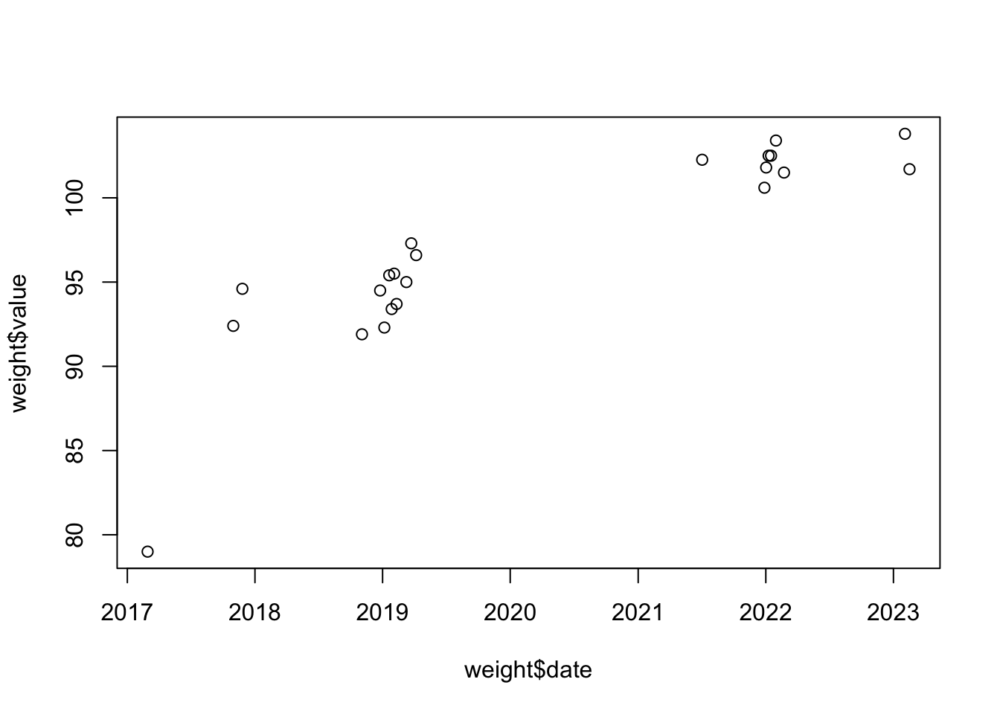
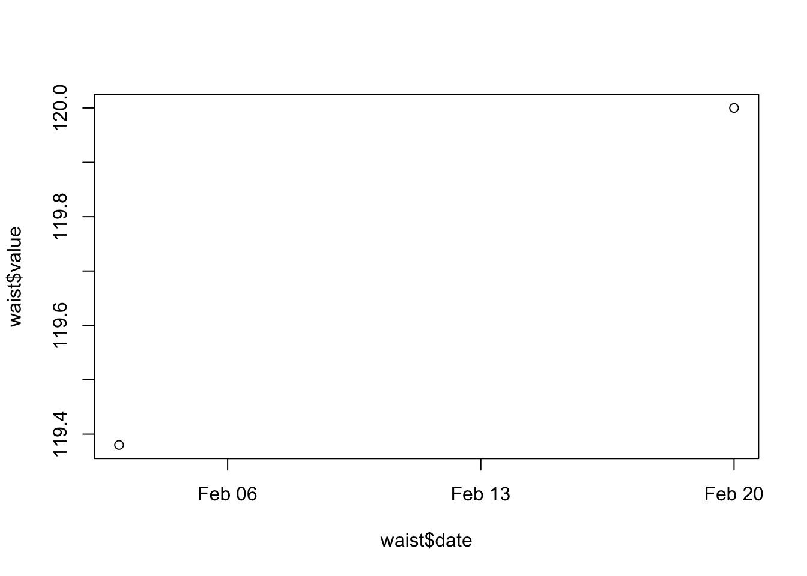

library(XML)
library(dplyr)
Attaching package: 'dplyr'The following objects are masked from 'package:stats':
filter, lagThe following objects are masked from 'package:base':
intersect, setdiff, setequal, unionlibrary(XML)
library(dplyr)
Attaching package: 'dplyr'The following objects are masked from 'package:stats':
filter, lagThe following objects are masked from 'package:base':
intersect, setdiff, setequal, unionPrequisite: an Apple Health export file (export.zip) in the “data” directory.
Unzip the export from Apple Health:
unzip('data/export.zip')Parse the extracted files and create some data frames. Here I am indebted to John Goldin’s excellent blog post. Note that it can take minutes to process this data.
health_xml <- xmlParse("apple_health_export/export.xml")
health_df <- XML:::xmlAttrsToDataFrame(health_xml["//Record"], stringsAsFactors = FALSE) %>%
as_tibble() %>% mutate(value = as.numeric(value))Warning: There was 1 warning in `mutate()`.
ℹ In argument: `value = as.numeric(value)`.
Caused by warning:
! NAs introduced by coercionactivity_df <- XML:::xmlAttrsToDataFrame(health_xml["//ActivitySummary"], stringsAsFactors = FALSE) %>%
as_tibble()
workout_df <- XML:::xmlAttrsToDataFrame(health_xml["//Workout"], stringsAsFactors = FALSE) %>%
as_tibble
clinical_df <- XML:::xmlAttrsToDataFrame(health_xml["//ClinicalRecord"]) %>%
as_tibble()Warning in combineNamedVectors(lapply(doc, xmlAttrs), attrs, omit, ...): no
elements to combine across recordsThe health_df is of most interest for my needs. The “sourceName” column shows where the data came from:
unique(health_df$sourceName) [1] "Health" "WaterMinder" "My Water"
[4] "Lifesum" "Shortcuts" "Nicholas’s Apple Watch"
[7] "" "Blood Oxygen" "Nicholas’s iPhone"
[10] "Strava" "Seven" "Workout"
[13] "8fit" "Intervals Pro" "Zova"
[16] "Peloton" "Slopes" "Clock"
[19] "Headspace" "Forest" The “type” column shows the specific type of measurement:
health_df %>% filter(sourceName == 'Health') %>% distinct(type)# A tibble: 6 × 1
type
<chr>
1 HKQuantityTypeIdentifierBloodGlucose
2 HKQuantityTypeIdentifierHeight
3 HKQuantityTypeIdentifierBodyMass
4 HKQuantityTypeIdentifierOxygenSaturation
5 HKQuantityTypeIdentifierWaistCircumference
6 HKDataTypeSleepDurationGoal Let’s extract weight and waist measurements along with their dates:
health <- health_df %>% filter(sourceName == 'Health')
weight <- health %>% filter(type == 'HKQuantityTypeIdentifierBodyMass') %>% mutate(date = as.Date(creationDate))
waist <- health %>% filter(type == 'HKQuantityTypeIdentifierWaistCircumference') %>% mutate(date = as.Date(creationDate))
weight# A tibble: 22 × 10
type sourc…¹ sourc…² unit creat…³ start…⁴ endDate value device date
<chr> <chr> <chr> <chr> <chr> <chr> <chr> <dbl> <chr> <date>
1 HKQuan… Health 10.2.1 kg 2017-0… 2017-0… 2017-0… 79 <NA> 2017-02-28
2 HKQuan… Health 11.0.3 kg 2017-1… 2017-1… 2017-1… 92.4 <NA> 2017-10-31
3 HKQuan… Health 11.1.2 kg 2017-1… 2017-1… 2017-1… 94.6 <NA> 2017-11-26
4 HKQuan… Health 12.0.1 kg 2018-1… 2018-1… 2018-1… 91.9 <NA> 2018-11-03
5 HKQuan… Health 12.1 kg 2018-1… 2018-1… 2018-1… 94.5 <NA> 2018-12-25
6 HKQuan… Health 12.1.2 kg 2019-0… 2019-0… 2019-0… 92.3 <NA> 2019-01-06
7 HKQuan… Health 12.1.2 kg 2019-0… 2019-0… 2019-0… 95.4 <NA> 2019-01-20
8 HKQuan… Health 12.1.2 kg 2019-0… 2019-0… 2019-0… 93.4 <NA> 2019-01-27
9 HKQuan… Health 12.1.2 kg 2019-0… 2019-0… 2019-0… 95.5 <NA> 2019-02-03
10 HKQuan… Health 12.1.2 kg 2019-0… 2019-0… 2019-0… 93.7 <NA> 2019-02-10
# … with 12 more rows, and abbreviated variable names ¹sourceName,
# ²sourceVersion, ³creationDate, ⁴startDateLet’s plot them:
plot(weight$date, weight$value)
plot(waist$date, waist$value)